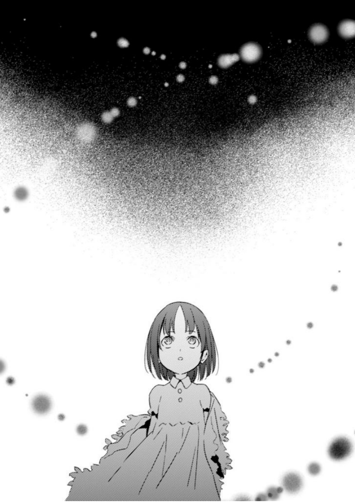

Em conclusão, "ele" era um ser tão alheio quanto possível. "Ele" foi invocado para esta Guerra do Santo Graal Falsa como um Servo da classe Rider. Sua existência era prova de que esta Guerra do Santo Graal era falsa; prova de que nada era menos digno do título de "Santo Graal" do que o objeto desta guerra.
Só no nome "ele" era um Espírito Heroico, e "ele" não era, de forma alguma, um Herói. Então, um Espírito Vilanesco? Um Espírito Demoníaco? Não. Nenhum desses termos basta para descrevê-lo. Em alguns lugares, "ele" era descrito como uma "maldição"; em certas religiões, dizia-se que "ele" era uma "punição divina".
Na Guerra do Santo Graal, os Servos são escolhidos do passado e do futuro, de todas as eras da história da humanidade.
As classes nas quais os Servos são invocados transcendem o tempo. Um Herói do passado, conhecido apenas pela tradição, pode ser invocado; assim como um Herói do futuro, ainda não nascido neste mundo. Se a Guerra do Santo Graal existisse na época em que Amakusa Shirou viveu, talvez ele até pudesse invocar sua versão futura, mais poderosa, um ícone do heroísmo.
Sob essa perspectiva, "ele" existia desde tempos imemoriais e provavelmente continuaria a existir muito além do futuro. "Ele" viveu uma vida mais curta que a de qualquer um, e viveu uma vida mais longa que a de qualquer um.
E assim, "ele", um ser com presença física, embora não fosse um Espírito Heroico... mesmo neste exato momento, não há dúvida de que "ele" continua tirando a vida daqueles que vivem neste planeta.
Na verdade, talvez "ele" o faça para que, "por si mesmo", possa fornecer alimento para que a vida recomece.
Como é belo. Foi o que pensou certa jovem garota ao contemplar aquilo que se estendia diante dela. Era uma cidade que lhe era familiar. A cidade em que havia sido criada. Inúmeros edifícios se erguiam sobre ela, arranhando o vasto céu com tamanho vigor que pareciam prontos para engoli-la também.
Um par de vias de seis pistas se encontrava em um enorme cruzamento. As principais artérias norte-sul e leste-oeste da cidade de Snowfield se cruzavam ali, não muito longe do centro. Vista do alto, a malha viária parecia formar uma imensa cruz, assinalando o nexo da cidade.
Um observador que olhasse apenas para aquelas grandes vias poderia muito bem pensar que estava numa cidade tão grandiosa quanto Nova York ou Chicago. De fato, aquelas estradas corriam além dos limites urbanos rumo aos ambientes naturais multifacetados que cercavam Snowfield com tanto ímpeto que era como se declarassem ser parte daquela paisagem, não, como se fossem a culminação, a perfeição de toda a natureza.
Mas... havia algo errado. E a garota achava esta cidade, esta cidade familiar, bela precisamente porque havia algo errado.
Ela estava no centro daquele enorme cruzamento, que também era o centro da cidade.
Tratava-se de um cruzamento diagonal, permitindo que pedestres atravessassem em todas as direções; mas, é claro, em algum momento o tráfego voltaria, obrigando qualquer um a sair da pista.
E, no entanto, ela estava ali havia mais de dez minutos. Os sinais tinham mudado incontáveis vezes. Mas... reinava o silêncio. Nem um único carro buzinava para ela. E era como deveria ser. Pois não havia um único ser humano à vista. Um cruzamento vazio. Uma via sem veículos. Será que ela percebeu que estava silencioso? E mais: será que sequer percebeu que não havia cheiro algum? Do meio da pista, era evidente que aquelas grandes avenidas careciam de qualquer presença humana. A garota imaginou um tapete vermelho cor de asfalto, uma contradição em forma. Ficou deslumbrada com a beleza do conjunto de arranha-céus diante dela.
Na ausência de pessoas, o concreto, esse símbolo da humanidade, parecia um belo objeto da natureza, brotado da superfície da Terra.
Se um prédio fosse uma árvore, então esta cidade seria uma floresta grandiosa e harmoniosa. Nesse caso, a torre da prefeitura, a mais alta de todas, seria uma anciã entre elas.
Ela não sabia por que estava ali. Por isso, vagava pela cidade em busca de uma resposta. Mas isso lhe trazia tristeza. Embora achasse aquele mundo belo por não ter pessoas, também o achava solitário. No início, sentia apenas solidão; dentro de poucos dias, porém, havia se acostumado.
De fato. Ela vagara por essa cidade vazia por um longo, longo tempo. Depois de cerca de três meses, havia parado de contar os dias. Nunca sentia fome, embora não soubesse por quê. Durante o dia, perambulava pela cidade e, ao anoitecer, dormia.
À noite, luzes se acendiam nos prédios vazios. Ela olhava para o céu noturno e encontrava consolo nas estrelas. Poucas coisas são mais perturbadoras do que ver luzes se acenderem em um prédio sem ninguém dentro, mas ela já havia se acostumado fazia muito tempo, diante do absurdo de uma cidade vazia de pessoas.
À medida que a solidão se retirava de seu coração, o vazio deixado por ela era preenchido pelo prazer que sentia por estar naquela cidade vazia.
Depois de passar um tempo contemplando a cidade, deitou-se no meio do cruzamento e fitou distraidamente o céu noturno.
Papai. Mamãe. Os rostos dos pais lhe vieram à mente. Me desculpem. Eu não consegui fazer direito. Seu primeiro impulso foi se desculpar. Mas então percebeu que nem sequer estava fazendo algo pelo qual devesse se desculpar e... duas velhas emoções brotaram dentro dela. Uma era a solidão, nascida da impossibilidade de encontrar outra pessoa. A outra era...
Hospital Central de Snowfield.
Um enorme edifício coberto de tinta branca erguia-se no distrito central da cidade de Snowfield.
À primeira vista, parecia muito um museu de arte. Na realidade, porém, era um grande hospital, equipado com os melhores aparelhos da cidade.
Era um castelo da cura. Multidões de pacientes batiam a seus portões em busca de tratamento com cirurgiões, especialistas psicossomáticos e todo tipo de outro profissional.
É claro que nem todos os pacientes iam ao hospital por procedimentos eletivos. Muitos eram levados para lá por outros motivos.
"...Receio ter de informá-los de que será difícil sua filha recuperar a consciência nesse estado", disse um médico a um homem e uma mulher.
Os dois trocaram olhares. Deviam ter algo em torno dos trinta anos e pareciam ser do Leste Asiático. Estavam mais que um pouco transtornados.
"A partir de hoje, nossa filha completa um ano inteiro internada... isso é sinal de que o estado dela piorou?", perguntou o homem, em inglês fluente.
"...Fisicamente falando, não há sintomas que sugiram piora no quadro de sua filha. Ainda assim, quanto maior a duração do coma, mais difícil se torna a recuperação."
A paciente estava sob seus cuidados havia um ano inteiro e ainda não havia recuperado a consciência. Entrara em estado vegetativo. Apenas o corpo continuava a se desenvolver, e mesmo isso em ritmo lento.
Ela tinha apenas dez anos e três meses. Ninguém sabia o que lhe acontecera. Certo dia, perdeu a consciência de repente e não voltou a acordar; apavorados, os pais a trouxeram para aquele hospital.
Os exames revelaram que o corpo dela estava coberto de lesões, principalmente ao redor do crânio.
Após uma biópsia em uma dessas lesões, descobriu-se que eram causadas por uma cepa desconhecida de bactéria. Todos os médicos entraram em pânico, temendo uma epidemia dentro do hospital.
No fim, descobriu-se que a bactéria não era contagiosa, o que manteve o mistério de como a própria garota havia sido infectada em primeiro lugar. Os médicos consideraram encaminhá-la a um hospital com instalações ainda mais avançadas, mas, por algum motivo, o acesso foi negado, e assim a garota permaneceu sob observação naquele hospital municipal.
"Não observamos mudanças no estado da infestação bacteriana. Infelizmente, isso significa que a bactéria continuará prejudicando a função cerebral dela daqui para frente. A bactéria não causou dano suficiente para provocar necrose, mas comprometeu severamente suas funções mentais." O médico falava da forma mais reconfortante que conseguia.
"Entendo...", respondeu a mulher, a voz transbordando preocupação. "Tenham em mente que isso não significa que a recuperação seja impossível. Houve casos em que um paciente permaneceu em estado vegetativo por mais de dez anos antes de recuperar a consciência. À medida que aprendermos mais sobre o genoma da bactéria, mais opções de tratamento ficarão disponíveis. Por favor, não percam a esperança." Ela fazia o possível para manter o ânimo dos dois, mas...
O pai da paciente pareceu ainda mais abatido. "Esqueça a consciência dela... as funções reprodutivas continuam intactas?" "....Perdão?" Por um momento, ela não entendeu o que estava sendo perguntado. Simplesmente não conseguia compreender o que ele queria dizer com "esqueça a consciência". Por alguns instantes, um silêncio pesado tomou o lugar.
Não demorou para o homem falar de novo, sem querer deixar o silêncio se arrastar. Reformulando a pergunta com mais detalhes, disse: "Eu gostaria de saber se os ovários e o útero dela, ou..."
"...ao menos os ovários, estão se desenvolvendo normalmente."
"Er... bem, as lesões estão inibindo o crescimento apenas na parte do cérebro em que se concentram, então não houve efeitos adversos nos outros órgãos, mas..." O médico apenas lhe informou os fatos, ainda sem entender por que ele perguntava aquilo. Mas...
Ao ouvir a resposta, os pais da paciente voltaram a se olhar. Seus rostos se iluminaram.
"Sério!? Bem, nesse caso, muito, muito obrigado! Continuaremos pagando as despesas hospitalares dela como temos feito, então, por favor, continuem cuidando bem da nossa filha!"
"Desculpe... não é... quer dizer..." "Somos realmente muito gratos, doutora. Está vendo, querida? Você não precisa mais se preocupar com isso."
"Tem razão, meu bem. Vamos indo... precisamos fazer os preparativos para esta noite." O jovem casal saiu do hospital animado, deixando para trás a médica completamente perplexa.
Ela não fazia ideia do que seria apropriado dizer àqueles dois, então apenas observou enquanto iam embora.
"Meu Deus... o que havia de errado com eles...?" Talvez o choque de encontrar a filha em coma os tivesse deixado completamente confusos. Na próxima vez que fossem ao hospital, ela teria de recomendar acompanhamento psicológico.
Pensando naquele casal tão peculiar, ela atravessou a porta externa do quarto esterilizado.
Depois de ser borrifada com gás desinfetante e banhada por luz ultravioleta, a porta interna se abriu, revelando uma única cama.
Na cama jazia uma garota adormecida, ligada a um soro. À primeira vista, parecia apenas estar dormindo, mas seu rosto estava emagrecido e sem vida, e nada indicava que um dia voltaria a despertar.
"...Mesmo que seus pais a abandonem, eu não vou abandonar. Nunca vou desistir de você." O único som vindo da garota era o da própria respiração. Enquanto a encarava, a médica checou o soro e os sinais vitais com renovada determinação.
E então, ela percebeu algo estranho. "...oh?" Notou a anormalidade enquanto reposicionava a garota. Algo vermelho havia surgido na mão direita imóvel da menina.
"O que... são isso...?" Aproximou o rosto da mão da garota. Ali, viu sigilos carmesins que lhe lembraram elos de corrente.
"Uma tatuagem...? Mas quem...?" O acesso ao quarto da garota era rigidamente controlado, e não havia como alguém ter levado instrumentos de tatuagem para dentro. Além disso, quando a havia examinado naquela mesma manhã, não existia nada de anormal. Um arrepio percorreu sua espinha.
"Isso é... algum tipo de... brincadeira?" E, embora não houvesse como ela sequer saber da existência dos magos...
Aquelas marcas eram, sem a menor dúvida, Selos de Comando.
A outra emoção era uma mistura de dor e medo. Ela ainda era uma menina, mas, quando se lembrava do que os pais lhe fizeram quando era ainda menor...
Aquilo certamente não era crueldade. Era, antes, amor aplicado de forma racional. "Vamos transformá-la em uma maga ilustre." Eles a cobriam de amor ao dizer aquelas palavras. Apesar da pouca idade, ela entendia isso.
E, ainda assim, a dor a consumia. Dor dor dor dor dor dor dor dor dor. A dor dominou sua infância. Mesmo devendo ter memórias agradáveis, memórias felizes e memórias tristes, tudo isso foi sobrescrito por uma dor esmagadora.
"Desculpem. Vou fazer direito, então..." Mesmo quando tentava esquecer, não conseguia superar a dor. Se fosse mera crueldade, talvez tivesse sido capaz de selar tudo aquilo. Infelizmente para ela, realmente acreditava que os pais a amavam. Na verdade, era justamente por isso que não conseguia fugir. Só podia sofrer. Desde pequena, acreditou que poderia retribuir o amor dos pais suportando aquilo.
Infelizmente, não compreendia que os pais não a amavam como pessoa. Eles só a amavam como receptáculo para a continuidade da linhagem da família, como o futuro deles no mundo da magia.
Seus pais carregavam ambos um legado mágico e estavam, de fato, entre aqueles que fugiram com parte da maquinaria que sustentava a verdadeira Guerra do Santo Graal.
O conhecimento que obtiveram não dizia respeito apenas à Guerra do Santo Graal. Eles também adquiriram parte do sistema de entomomancia de certo mago e o adaptaram rapidamente ao próprio uso.
Seu objetivo era desenvolver uma nova maneira de modificar a carne usando insetos ainda menores. E, após décadas de tentativa e erro, finalmente se aproximavam da perfeição de uma espécie de pseudoentomomancia.
Usavam bactérias modificadas por magia para aprimorar seu hospedeiro. Se empregadas corretamente no corpo de um jovem mago, amplificariam os Circuitos Mágicos desse mago. Esse era o plano.
Assim que aperfeiçoaram a técnica, escolheram a primogênita como ilustre primeiro sujeito de teste. Ela sofreu imensa agonia. Embora seu corpo quase não tenha sido alterado, seus Circuitos Mágicos foram ampliados a um grau absurdo.
À medida que crescia, seus Circuitos Mágicos se aproximavam da conclusão. Só faltava herdar a magia de sua família. Então o plano deles teria sido um sucesso perfeito, mas...
Por azar, perderam o controle de parte das bactérias e, por isso, a ainda jovem garota foi privada da consciência.
Para garantir que continuasse possível para sua filha, com os Circuitos Mágicos amplificados, sucedê-los, seus pais a hospitalizaram. É claro que, a essa altura, eles já não tinham interesse nela como pessoa.
E então... ainda sem saber que seus pais praticamente a haviam abandonado, ela continuou vagando no mundo dos próprios sonhos, uma fenda entre a vida e a morte.
Talvez por causa da forma como a bactéria a alterou, seus sonhos fossem infinitamente mais realistas que qualquer sonho comum. No fim, porém, ainda era um mundo no qual ela não podia provar nem sentir cheiro de nada.
Ainda era apenas um sonho. "Desculpa, desculpa... desculpa por sentir dor!"
Enquanto revivia lampejos de seu passado, gritava para o mundo vazio. Transbordava energia mágica, mas lhe faltava conhecimento. Era uma bruxa, porém impotente.
Em seu sonho, reuniu toda a força que possuía e gritou. Sem parar. Como que para apoiá-la, seu corpo alterado fez os Circuitos Mágicos correrem selvagemente pelo mundo dos sonhos.
Como se percebessem que iam desaparecer; como se fossem simples crianças chorando...
"Não me deixem!" Cada célula de seu corpo gritava.
"Eu vou fazer direito! Vou suportar a dor!" E, embora nem soubesse o que exatamente precisava fazer direito... "Então, por favor, por favor, não me abandonem! Não me deixem...!"
Então... ela viu um clarão. Houve uma rajada de vento poderosa, um rugido em um mundo sem som. Não fazia ideia do que estava acontecendo. Saltou para cima e olhou ao redor do cruzamento e...
Todas as estradas estavam cobertas por uma névoa negra. Algo havia mudado, mas ela não conseguia entender o quê. Enquanto permanecia ali, completamente atônita, uma voz ecoou. Era um som áspero, como o ruído de enxames de insetos se chocando entre si. E, ainda assim, eram palavras, palavras com significado.
"P E R G U N T O : V O C Ê É M I N H A M E S T R E ?"
Ela não tinha como saber o que aquelas palavras queriam dizer e, ainda assim... aquele Servo era bizarro em medida excessiva.
Para começar, "ele" não possuía persona alguma, muito menos a natureza de um Herói. Afinal, "ele" nem sequer era humano em primeiro lugar. Quando o Santo Graal lhe concedeu conhecimento, porém, "ele" apareceu como um Servo, na forma de uma massa amorfa de consciência. "Ele" não tinha emoções, nem sequer monólogo interno. "Ele" era apenas uma massa de conhecimento sobre a Guerra do Santo Graal, criada pelo sistema, algo parecido com um robô.
As palavras que "ele" falava eram a encarnação do pavor, mas... ela não ficou assustada. Havia alguém ali, então não estaria mais sozinha. Algo tinha mudado em seu mundo imutável.
Ela ficou tão feliz com isso que ergueu os olhos para os arranha-céus envoltos pela névoa escura e, timidamente, disse "seu" nome.
"Quem é você? Meu nome é Kuruoka Tsubaki." E assim, ela se tornou a ilustre primeira Mestre da Guerra do Santo Graal Falsa. Ninguém poderia saber de seu contrato, forjado em um sonho, e... de fato, no mundo exterior, a garota permanecia inconsciente.
Snowfield. Residência dos Kuruoka. "Está quase na hora de Faldeus fazer sua declaração." Depois de voltarem do hospital, os Kuruoka estavam de ótimo humor, preparando-se para o ritual que realizariam naquela noite.

"As linhas ley desta região em breve estarão em seu auge. Então, receberei meus Selos de Comando. Quando os tiver, tudo estará em seu devido lugar."
"Além disso, até já preparamos um Fantasma Nobre como relíquia... e, se fosse necessário, poderíamos até usá-lo como arma nós mesmos."
"De fato. Se vamos convocar Shi Huangdi, devemos estar preparados para demonstrar o devido grau de respeito."
A filha deles não era sequer tema de conversa naquele momento. Ao que parecia, estavam se preparando para invocar a figura mais celebrada da história chinesa. Infelizmente para eles, todos os preparativos seriam inúteis. Não porque sua filha inconsciente tivesse tomado para si os Selos de Comando que deveriam ter sido deles.
Se esse fosse o único problema, talvez ainda pudessem ter recebido outro conjunto de Selos de Comando. No fim, eles não receberam nenhum Selo de Comando, mas receberam outra coisa.
Sentindo algo estranho, o marido olhou para o próprio braço direito. "Hm...?" Havia uma mancha negra. À primeira vista, parecia um hematoma. Franziu o cenho, imaginando se havia esbarrado em algo. Então olhou para a esposa. "Querida, o que você acha que é isso... ei!?" Ficou chocado.
Manchas negras semelhantes surgiram por todo o rosto e pelos braços dela e, em seguida, ela caiu no chão como uma marionete com os fios cortados.
"E-ei...!?"
Ele tentou chegar até a esposa, mas seu campo de visão ficou turvo e indistinto. Tudo se dividiu em um arco-íris de cores e começou a cair para cima.
Quando percebeu que era ele quem estava caindo, já era tarde demais. Não tinha sequer força para se manter de pé.
Enquanto jazia à beira da inconsciência, entendeu o que estava acontecendo. A energia mágica estava sendo sugada de seu corpo e levada para outro lugar. Como não era sua verdadeira força vital que estava sendo roubada, ele não morreria por causa disso. Ainda assim, certamente cairia em estupor.
Isso não pode ser. Se alguém... nos atacar agora... Não, e se... alguém... já... Mesmo enquanto mergulhava numa escuridão eterna, sua mente estava cheia de pensamentos sobre a Guerra do Santo Graal. Em nenhum momento pensou na filha.
E então, alguns minutos depois... os dois se puseram de pé como se nada tivesse acontecido. Seus corpos ainda estavam cobertos de manchas negras. "...Pensando bem, hoje é aniversário da Tsubaki, não é?" "Ah, é mesmo, querido! Preciso fazer um bolo!" Eles estavam visivelmente adoecidos e, ainda assim, falavam com calma. E falavam de algo absolutamente fora do comum para eles.
De fato, haviam perdido as personalidades que antes possuíam e... tornaram-se bonecos vivos, que passavam a vida exatamente como a filha desejava.
Ela dançava com "ele". Dançava com "ele". Para esquecer o tempo que passava desperta. "Ele" dançava com ela. "Ele" dançava com ela. Para conceder a ela todos os desejos.
"Oba! Obrigada! Papai! Mamãe!" "Tudo bem, Tsubaki. Você foi muito bem." "Isso mesmo. Você é o nosso pequeno tesouro precioso." Tendo recebido um presente tão maravilhoso, ela correu alegremente pela casa. Depois de se divertir por algum tempo, sorriu para a massa de névoa negra parada ao seu lado. "Obrigada por ter trazido minha mamãe e meu papai para cá!"
O Servo não fez nem mesmo um aceno em resposta. "Ele" apenas continuou a existir.
As cenas do mundo real eram projetadas em seus sonhos. Talvez esse fosse o poder da energia mágica que florescera dentro dela enquanto permanecia inconsciente. Considerando que é impossível afetar o mundo real de dentro de uma paisagem onírica, porém, a magia usada para projetar o mundo real em um mundo de sonhos era inútil; uma linha de pesquisa que poucos magos sequer se dariam ao trabalho de seguir.
O Servo apenas facilitava a magia inconsciente da garota. "Ele" manipulava os pais dela no mundo real para que agissem exatamente como ela queria.
É claro que "ele" também absorvia a energia mágica deles. Seus instintos o compeliam a fazer isso. "Ele" não podia compreender emoções humanas. "Ele" apenas possuía conhecimento. E, de fato, por causa disso, e por causa da enorme força que tinha, fez da garota o maior e pior azarão da Guerra do Santo Graal.
"Ele" cavalgava o vento, as águas, os pássaros, as pessoas e... assim, era adequado que fosse da classe Rider, pois "ele" havia cavalgado rumo ao domínio do mundo.
Mais importante ainda, porém... "ele" era a encarnação da calamidade, e as pessoas lhe deram um epíteto que refletia isso. Talvez essa atribuição espúria de uma personalidade a "ele" tenha sido a razão mais importante para ter sido invocado como Rider.
Em certa época, "ele" soltou a Peste Negra, que matou trinta milhões; em outra, sob o nome de Gripe Espanhola, matou cinquenta milhões. "Ele" era o cavaleiro que levava a calamidade a todos. Seu epíteto: Pestilência. Quanto a alguém reconhecer qual era esse epíteto, ou mesmo perceber que "ele" havia sido invocado como Servo em primeiro lugar...
De todo modo, a Guerra do Santo Graal Falsa finalmente estava a caminho de se tornar um turbilhão de caos.